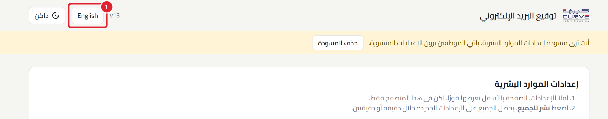
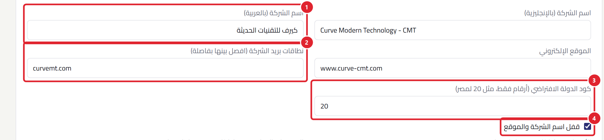
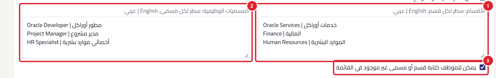
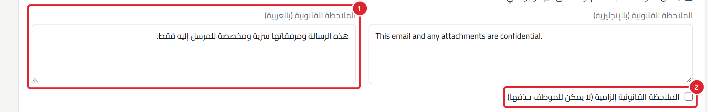
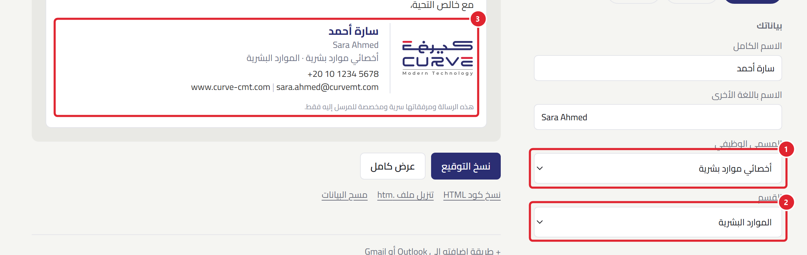
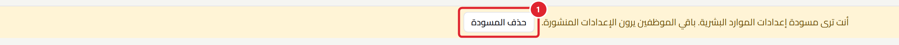
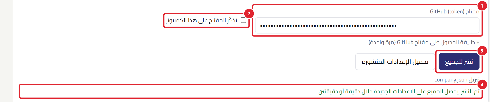

قبل أن تبدئي
من صفحة الإعدادات تتحكمين في بيانات الشركة التي تظهر في توقيعات كل الموظفين: اسم الشركة، الأقسام، المسميات الوظيفية، والملاحظة القانونية.
أي تغيير تنشرينه يظهر عند كل الموظفين خلال دقيقة أو دقيقتين.
ستحتاجين إلى:
- رابط صفحة الإعدادات (في الخطوة 1).
- مفتاح GitHub: كلمة سر طويلة تبدأ بـ github_pat_. يرسله لكِ مسؤول النظام مرة واحدة.
1افتحي صفحة الإعدادات
افتحي هذا الرابط في المتصفح (Chrome أو Edge):
ahmedgaidcurve.github.io/curve-signature/?hr=1
- زر اللغة: لو ظهرت الصفحة بالإنجليزية، اضغطي هذا الزر (سيكون مكتوبًا عليه العربية).

2بيانات الشركة
- اسم الشركة بالعربية: يظهر في التوقيعات العربية.
- نطاقات بريد الشركة: مثل curvemt.com. لو كتب موظف بريدًا آخر (مثل Gmail) تظهر له رسالة تنبيه.
- كود الدولة: اكتبي 20 لمصر. يُستخدم لترتيب أرقام الموبايل تلقائيًا.
- قفل اسم الشركة والموقع: لو علّمتِ عليه، لا يستطيع الموظف تغيير اسم الشركة أو الموقع.

3الأقسام والمسميات الوظيفية
اكتبي كل قسم في سطر: الاسم بالإنجليزية، ثم علامة |، ثم الاسم بالعربية.
Human Resources | الموارد البشرية
- الأقسام: سطر لكل قسم.
- المسميات الوظيفية: بنفس الطريقة، سطر لكل مسمى.
- السماح بقسم أو مسمى غير موجود: لو علّمتِ عليه، يستطيع الموظف اختيار «أخرى» وكتابة اسم بنفسه.

4الملاحظة القانونية (اختياري)
جملة قصيرة بخط صغير تظهر أسفل التوقيع. اتركيها فارغة لو لا تحتاجونها.
- الملاحظة بالعربية (وبجانبها الإنجليزية): تظهر حسب لغة التوقيع.
- إلزامية: لو علّمتِ عليها، لا يستطيع الموظف حذفها من توقيعه.

5راجعي النتيجة قبل النشر
انزلي لأسفل الصفحة. ستجدين نموذج الموظف كما سيراه الجميع:
- المسمى الوظيفي أصبح قائمة يختار منها الموظف.
- القسم أيضًا أصبح قائمة.
- التوقيع يأخذ الاسم العربي للقسم والمسمى تلقائيًا، ومعه الملاحظة القانونية.

ستلاحظين شريطًا أصفر في أعلى الصفحة. معناه أن ما ترينه مسودة على جهازك فقط، ولم يصل للموظفين بعد.

6انشري للجميع
- الصقي مفتاح GitHub في الخانة (Ctrl + V).
- علّمي على تذكّر المفتاح على هذا الكمبيوتر حتى لا تلصقيه كل مرة. (على جهازك الشخصي فقط.)
- اضغطي نشر للجميع.
- تظهر رسالة خضراء: تم النشر. بعد دقيقة أو دقيقتين يرى كل الموظفين التغيير.

7أرسلي الرابط للموظفين
الموظفون يستخدمون الرابط العادي (بدون صفحة الإعدادات):
ahmedgaidcurve.github.io/curve-signature/?lang=ar
كل موظف يكتب اسمه ورقمه، ويختار القسم والمسمى، ثم يضغط نسخ التوقيع ويلصقه في Outlook.
لو ظهرت مشكلة
| الرسالة أو المشكلة | ماذا تفعلين |
|---|---|
| مفتاح GitHub غير صحيح أو انتهت صلاحيته | اطلبي مفتاحًا جديدًا من مسؤول النظام. |
| هذا المفتاح لا يملك صلاحية تعديل مستودع curve-signature | صوّري الرسالة وأرسليها لمسؤول النظام. |
| فشل النشر. تأكد من اتصال الإنترنت | تأكدي من الإنترنت، ثم اضغطي نشر للجميع مرة أخرى. |
| نشرتُ ولا أرى التغيير | انتظري دقيقتين، ثم اضغطي Ctrl + F5 لتحديث الصفحة. |
| خانة المفتاح فارغة | المفتاح محفوظ فقط على الجهاز الذي علّمتِ فيه «تذكّر المفتاح». الصقيه مرة أخرى. |